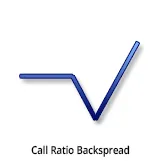
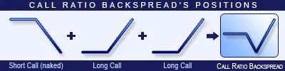
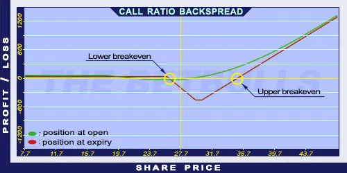

Description and use

Call Ratio Backspread generates profit when share prices are rapidly increasing. Furthermore, increased volatility is useful for the position. Stagnating prices are unbeneficial for the strategy. The strategy consists of Short and Long Call options with the same expiration, but different quantities. Typically, the ratio of the purchased/sold Call options is 2:1 or 3:2. Thus, it is a net credit investment. The potential profit is unlimited. The direction of the market is (aggressively) increasing. The trader speculates on high volatility shares with explosively increasing prices. The goal of the strategy is to minimise risks and costs. It is a long-term investment; the expiration is at least 6 months.
- Type: Bullish
- Transaction type: Credit
- Maximum profit: Unlimited
- Maximum loss: Limited
- Strategy: Ratio spread
Opening the Position

Call Ratio Backspread Option Position 1 or
Call Ratio Backspread Option Position 2
- Sell one or two lower strike Call options.
- Buy two or three higher strike Call options.
- The goal is to push down the initial costs to 0 or push below the amount of the net credit.
Steps
Entry:
Make sure the trend is ascending.
Exit:
- When the share price is below the Stop Loss, close the positions.
- Close the positions at least one month before the expiry date.
Basic Characteristics
- Maximum loss: Difference between strike prices - Net credit (or + Net debit).
- Maximum profit: Unlimited.
- Time decay: Time usually has a negative effect on the value.
- Lower breakeven point: Lower strike price + Net Credit.
- Upper breakeven point: Higher strike price + (Difference between strike prices * Short Call quantity) / (Long Call quantity - Short Call quantity) - Net Credit (or + Net debit).
Advantages and Disadvantages
Advantages:
- Low costs.
- Limited loss.
- The profit is unlimited if the share prices increase.
Disadvantages:
- Stagnating share prices cause increasing risks.
- Complexity of the strategy.
Closing the Position
Buy back the Short options and sell the Long options.
Mitigation of losses: Close the position the above-mentioned way.
Example

Call Ratio Backspread strategy example
- ABCD is traded for $25.37 on 25.05.2017.
- The investor sells a Short Call option which has a strike price of $25.00, expires in January 2018, and costs $4.90 (premium).
- Then, he buys 2 Long Call options which have a strike price of $30.00, expire in January 2018, and cost $2.40 (premium) each.
- Price of the underlying (share price): S= $27.65
- Premium (Short Call): SC= $4.90
- Premium (Long Calls): LC= $2.40 each
- Strike price (Short Call): KS= $25.00
- Strike price (Long Calls): KL= $30.00
- Net credit: NCr= $0.10
- Maximum loss (risk): R= $4.90
- Maximum profit: Unlimited
- Lower breakeven point: LBEP= $26.10
- Upper breakeven point: UBEP= $34.90